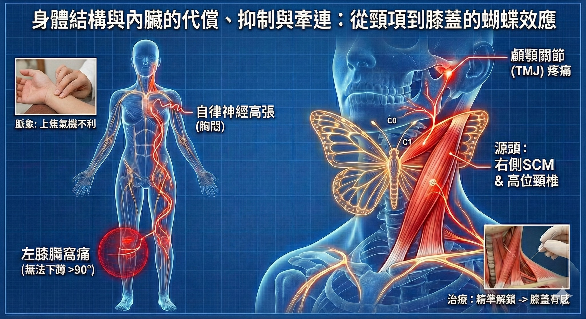

身體結構與內臟的代償、抑制與牽連 (2)：從顳顎到膝膕－胸鎖乳突肌的遠端蝴蝶效應
身體結構與內臟的代償、抑制與牽連 (2)：從顳顎到膝膕－胸鎖乳突肌的遠端蝴蝶效應
【臨床筆記】 延續前一篇關於高位頸椎、枕下肌群與胸鎖乳突肌（SCM）張力的討論，在臨床上，我們常能見證這種結構張力造成的遠端牽引。這是一個關於「上病下治」的典型案例，完美詮釋了當頸部張力失衡時，如何對遠端肢體產生意想不到的鎖定效應。
複雜的上下夾擊：#膝蓋痛 與 #顳顎關節 障礙
這是一位長期受慢性疼痛困擾的中年患者，其主訴呈現看似毫無關聯的「一上一下」兩個問題。
首先是左側 #膝膕窩疼痛。患者無法下蹲超過 90 度，只要角度一深，膝後側便劇痛卡住，且自覺站立時有明顯的長短腿體感。 其次是困擾多年的右側 #顳顎關節 （TMJ）酸痛。多年來嘗試過復健、徒手調整、咬合板治療甚至針灸，雖能暫時緩解，但症狀總容易反覆發作。
值得注意的是，患者提及過去曾在高壓狀態下，出現突發性胸悶、胸痛與過度換氣等自律神經失調症狀；雖經心臟科詳細檢查排除器質性病變，但這暗示了其神經系統長期處於「且戰且走」的高張狀態。
診斷：脈證合參，鎖定頸項
依慣例，先診脈以觀氣血虛實、濾除肌筋膜張力的干擾訊號。
脈象顯示雙寸濡弱、邊界模糊，左寸沈取細絲，右寸滑數頂指。此脈象明確指向上焦氣機不利，問題核心高度聚焦於頸項部、高位頸椎、枕下肌群與胸鎖乳突肌的張力異常。
接續觸診驗證，果然發現右側胸鎖乳突肌（SCM）異常粗壯緊繃，與左側形成肉眼可見的顯著不對稱。鉗捏按壓右側 SCM 時，誘發劇烈疼痛，並伴隨向肩膀區域輻射的酸脹感——這正是典型的 #肌筋膜激痛點 特徵。
治療與發現：遠端傳導的驚奇
診斷明確，治療策略隨之確立。 首先以徒手治療技術鬆解高位頸椎（Upper Cervical）周圍肌群，釋放僵硬的右側肩頸。接著使用鉗捏式觸診（Pincer Palpation）鎖定右側胸鎖乳突肌，利用乾針精準解除引發酸脹的激痛點。
就在處理高位頸椎與 SCM 的當下，患者驚訝地表示：「醫生，我的左膝蓋後面有一種酸酸被拉開的感覺！你明明在弄脖子，為什麼膝蓋會有反應？」
解謎：肌筋膜的 #力學連鎖
這個「動頸應膝」的神奇現象，並非巧合，而是 #解剖列車（Anatomy Trains） 與關節運動學的實證。
從膝關節動力學來看，下蹲時膝關節處於閉鎖鏈狀態，股骨相對於脛骨必須順利做出「向後滾動（Roll）」加「向前滑動（Slide）」的動作。無法蹲超過 90 度，通常意味著後側筋膜鏈（如腓腸肌、膕旁肌）張力過大，限制了關節的滑動軌跡。
這與 #顳顎關節（TMJ） 有何關聯？ 臨床上，我們常懷疑「#腓腸肌失能」透過筋膜鏈（如淺背線 SBL）向上影響頭頸，導致顳顎關節緊繃。但在這位患者身上，因果關係似乎是反向的。
推測真正的源頭是「高位頸椎的張力失衡與異常的胸鎖乳突肌」。 SCM 附著於顳骨乳突，直接影響顳顎關節的力學位置；同時，高位頸椎控制著全身的姿勢頸張力反射（Tonic Neck Reflex）。當右側 SCM 與頸椎長期鎖死，會透過螺旋線（Spiral Line）或深層核心張力，遠端拉扯對側或同側的下肢筋膜。因此，患者的膝蓋痛與腓腸肌緊繃，其實是頸部張力的「受害者」。
抓出躲在幕後的「源頭」
處理完高位頸椎與胸鎖乳突肌後，請患者嘗試活動下巴並再次下蹲。她開心地表示：「治療了這麼久，這是第一次有人處理頸項這個區域。原本緊繃酸澀的右側顳顎關節現在感覺非常輕鬆，嘴巴張開也不卡了，而且下蹲的角度明顯改善！」
患者驚訝於「不處理膝蓋而是處理頸項」，這在一般人眼中或許是巧合，但在結構醫學的視角裡，這是生理力學的必然。
為什麼不直接處理膝蓋？
因為在這個案例中，我認為膝蓋與顳顎關節一樣，都只是無辜的「受害者」。當高位頸椎與胸鎖乳突肌這組「轉向舵」被鎖死，身體為了維持視線水平與重心平衡，必須強迫下肢筋膜鏈進行代償。那條讓她蹲不下去的「筋」，其實是身體為了對抗頸部張力而拉起的最後一道防線。
若我們僅侷限在顳顎關節處進行局部的修補，或是單純針對膝蓋痛點尋求緩解，就如同在火災現場只忙著揮手趕煙，卻忘了去關掉瓦斯開關。
臨床上，症狀疼痛處並不等於問題根源。當我們跳脫「痛哪裡醫哪裡」的線性思維，透過中醫診脈與肌筋膜系統跨關節的連動佈局，就能在看似毫不相干的「上下夾擊」中，精準地找到那個牽一髮而動全身的解鎖點。
---
相關實證研究與文獻參考 (References)
1. 胸鎖乳突肌與顳顎關節障礙 (SCM & TMD)
- 論點： 研究證實，顳顎關節障礙 (TMD) 患者常伴隨胸鎖乳突肌 (SCM) 的活躍激痛點。針對 SCM 進行治療，能顯著改變下顎的運動軌跡並緩解咬合疼痛，證實頸部肌群是口顎系統的重要調控者。
- *Reference:* Fernández-de-las-Peñas, C., et al. (2010). Myofascial trigger points in subjects presenting with mechanical neck pain: A blinded, controlled study. *Manual Therapy*, 15(1), 39-44.
- Reference: Bae, Y., & Park, Y. (2013). The effect of relaxation of the sternocleidomastoid muscle on muscle activity and occlusion in patients with temporomandibular joint disorder. Journal of Physical Therapy Science, 25(8), 951-953.
2. 頸椎姿勢與全身筋膜鏈連動 (Cervical Posture & Myofascial Chains)
- 論點： 根據肌筋膜經線（Anatomy Trains）理論，胸鎖乳突肌透過「前表線 (Superficial Front Line)」與「側線 (Lateral Line)」與下肢產生力學連結。頭頸部的張力異常會透過這些連續的筋膜網，遠端影響骨盆甚至膝關節的活動度。
- Reference: Myers, T. W. (2020). *Anatomy Trains: Myofascial Meridians for Manual and Movement Therapists.
- Reference: Wilke, J., et al. (2016). What is evidence-based about myofascial chains: A systematic review. Archives of Physical Medicine and Rehabilitation, 97(3), 454-461.
3. 遠端治療效應與中樞調控 (Remote Effects & Central Modulation)
- 論點： 針對高位頸椎或關鍵肌群（如 SCM）的治療，能透過降低中樞敏感化（Central Sensitization）並調節本體感覺輸入，改善遠端肢體（如膝蓋）的疼痛閾值與肌肉張力。
- Reference: Llamas-Ramos, R., et al. (2014). Comparison of the short-term outcomes between trigger point dry needling and trigger point manual therapy for the management of chronic mechanical neck pain. *Journal of Orthopaedic & Sports Physical Therapy, 44(11), 852-861.
太初中醫診所 東門中醫
肌筋膜脈學中醫應用
中醫師 黃彥鈞
